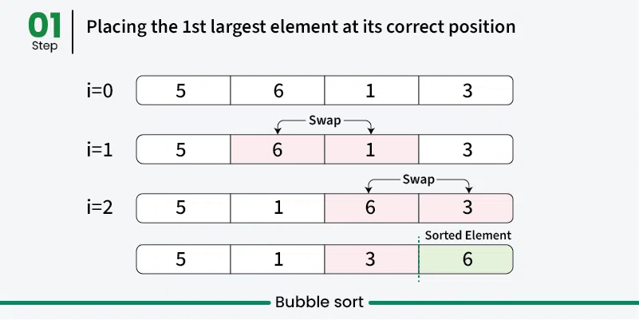
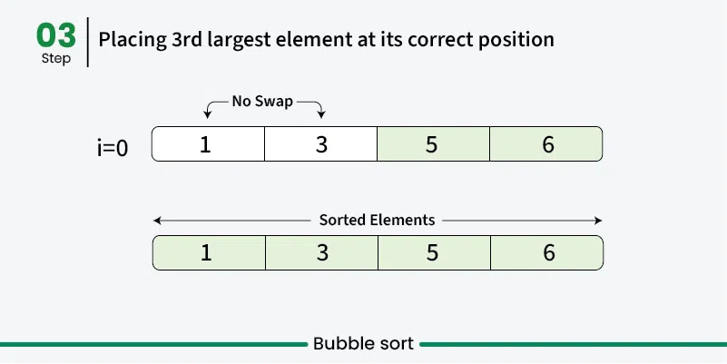
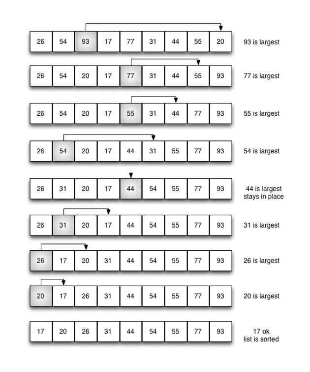

Bubble Sort
Bubble Sort adalah algoritma pengurutan paling sederhana yang bekerja dengan berulang kali menukar elemen yang berdekatan jika urutannya salah. Algoritma ini tidak efisien untuk kumpulan data besar karena kompleksitas waktu rata-rata dan terburuknya cukup tinggi.
 |
 |
 |
- Mengurutkan array menggunakan beberapa tahapan. Setelah tahapan pertama, nilai maksimum dipindahkan ke akhir (posisi yang benar). Dengan cara yang sama, setelah tahapan kedua, nilai terbesar kedua dipindahkan ke posisi kedua dari bawah, dan seterusnya.
- Pada setiap tahapan, proses hanya yang belum berpindah ke posisi yang benar. Setelah k tahapan, k terbesar harus telah dipindahkan ke k posisi terakhir.
- Dalam satu tahapan, kita mempertimbangkan elemen-elemen yang tersisa dan membandingkan semua elemen yang berdekatan, lalu menukar posisi jika elemen yang lebih besar berada sebelum elemen yang lebih kecil. Jika kita terus melakukan ini, kita akan mendapatkan elemen terbesar (di antara elemen-elemen yang tersisa) pada posisi yang benar.
Contoh Code
lst = [5,0,1,10,7,2,5,4,6,9]
print(lst)
for k in range(1,len(lst)):
->for i in range(0,len(lst)-1):
-->if lst[i]>lst[i+1]:
--->lst[i],lst[i+1] = lst[i+1],lst[i]
print(lst)
Selection Sort
Selection Sort adalah algoritma pengurutan berbasis perbandingan. Algoritma ini mengurutkan dengan berulang kali memilih elemen terkecil (atau terbesar) dari bagian yang belum diurutkan dan menukarnya dengan elemen pertama yang belum diurutkan.

- Cari elemen terkecil dan tukar posisinya dengan elemen pertama. Dengan cara ini kita mendapatkan elemen terkecil pada posisi yang benar.
- Kemudian, cari elemen terkecil di antara elemen yang tersisa (atau terkecil kedua) dan tukarkan dengan elemen kedua tersebut.
- Kita terus melakukan ini sampai semua elemen dipindahkan ke posisi yang benar.
Contoh Code
lst = [4,7,1,9,3,10,6]
print(lst)
for i in range(0,len(lst)-1):
->min=i
->for j in range(i+1,len(lst)):
-->if lst[j]'<'lst[min]:
--->min = j
->lst[i],lst[min]=lst[min],lst[i]
print(lst)